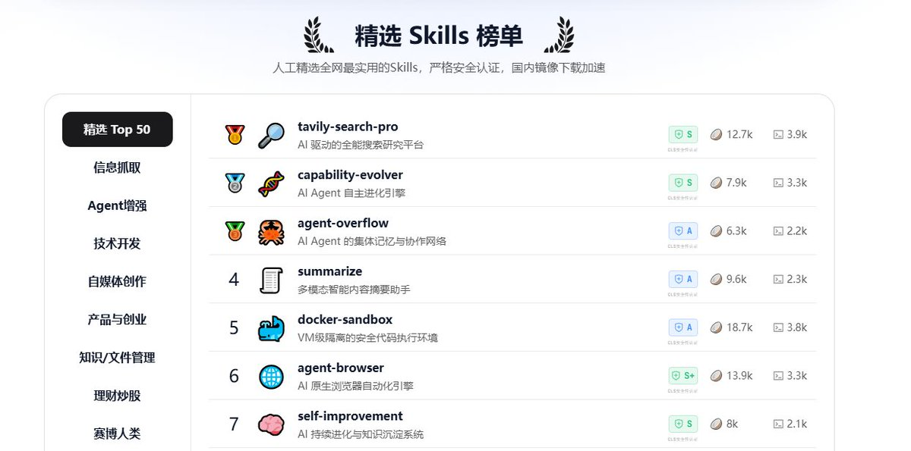

CHU_00B2
@chu_00b2
@zw2867759575009 这个实用哇

DJ
@zw2867759575009
最近在用AI做事情的时候，有个挺直接的体会：大模型本身能力不差，但真要处理某个具体领域的问题，光靠对话不太够，还是需要一些针对性的“技能包”，也就是SKILL。
之前我也试着去GitHub上找过，但说实话，对我这种没技术背景的人来说，入口不太友好，翻半天不知道哪个能用。 https://t.co/nkGSoDRbbo